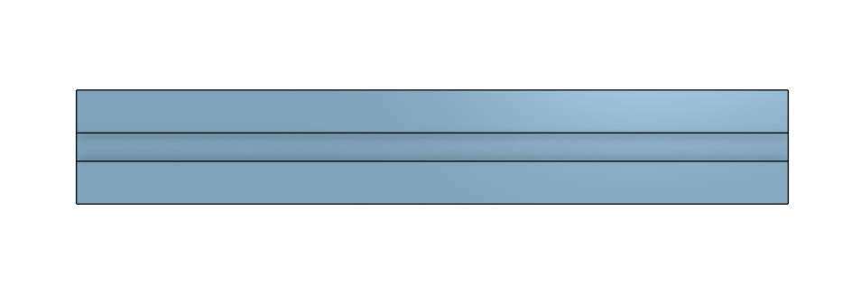
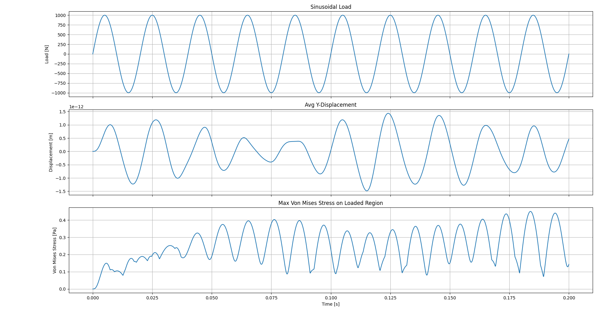
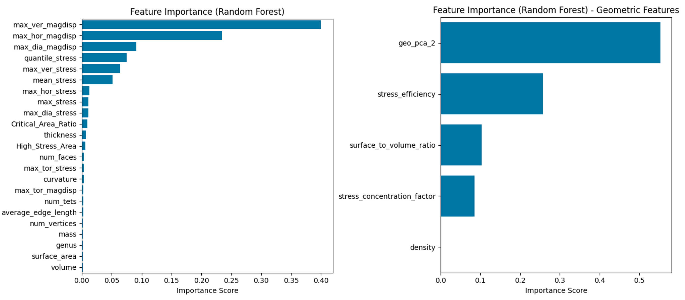
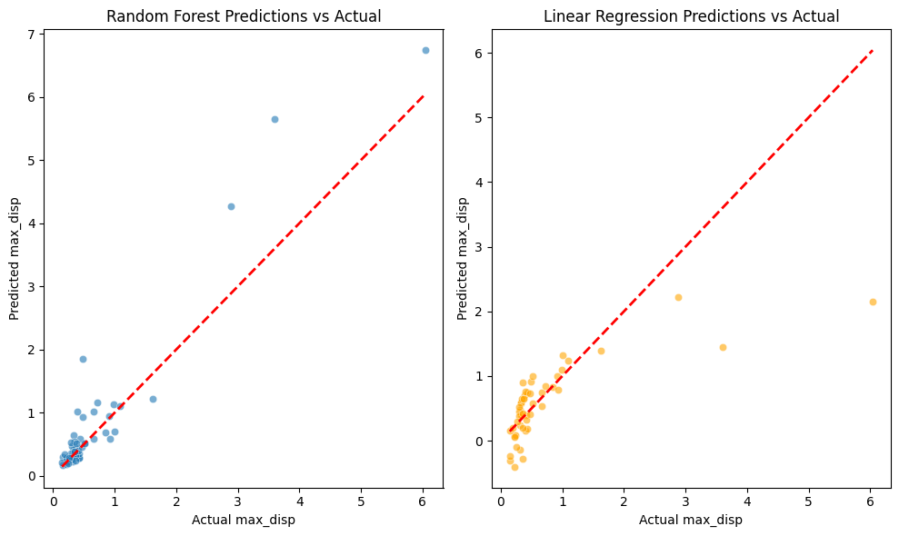
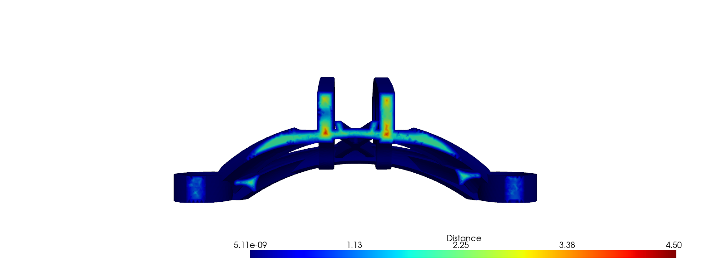
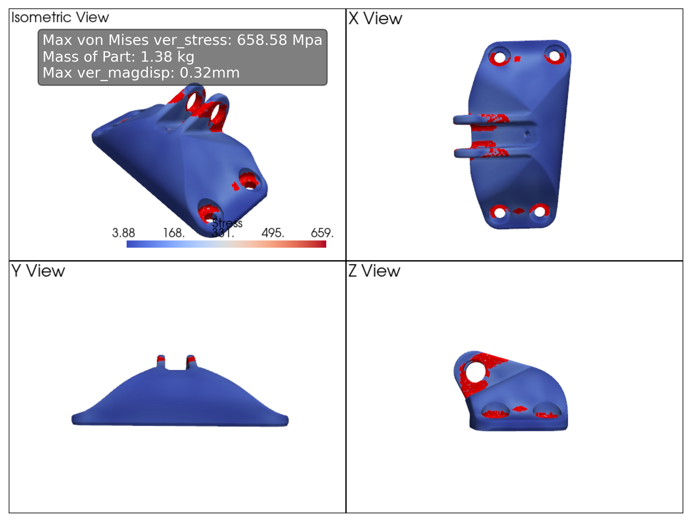

CAE Data Scientist | Simulation & Machine Learning
Mechanical Engineer with expertise in CAE, Machine Learning, and Simulation. Passionate about AI-powered material development.
Time-domain simulation of a 3D tetrahedral mesh under sinusoidal cyclic loading using an explicit central-difference solver and viscoplastic material model.


Results for a 1000 N sinusoidal load: applied load, average Y-displacement, and max von Mises stress over time, illustrating plastic deformation accumulation, damping effects, and dynamic response.
Deep learning-based material design.
Demonstration of widget which uses a conditional VAE model in the background to generate designs of metamaterial microstructures upon providing a ratio of preferred stiffness of material in the X-direction and Y-direction.
This application displays demonstrates the capability of Neural Networks to predict features as well as generate new features. A variational autoencoder (VAE) generates the microstructure, and a CNN predicts the ratio of stiffness from the newly generated microstructures enforcing a control on the generation.
Data Analysis and application of Machine Learning in Engineering and Computer Aided Engineering data.

My recent analysis on predicting maximum displacement of a structure showed that basic geometric features had weak contributions to maximum displacement prediction. Instead, engineered features—like principal components, surface-to-volume ratio, and other derived parameters—capture more relevant patterns.

(Work in Progress) Two machine learning models compared for their ability to predict maximum displacement from geometric features. Simple, fast, and effective.
Video demonstrating how a structure, in this case a Jet Engine Bracket, can be visualised as a mesh or a point cloud.

Example of using implicit distance computation to estimate local thickness of a structure.

Stress concentration analysis on various jet engine bracket designs helps identify weak spots and drive data-informed design refinements.
Radial wave roughness impact analysis.
Turbulence behavior simulation.
Masters Thesis, LivMATS (Nov 2023 - Sep 2024) - Reduced the computation cost required to obtain an optimal microstructure geometry having a stiffness constraint, by using deep generative models.
Research Assistant, LivMATs (Nov 2022 - May 2023) - Quantified the impact of radial wave surface roughness on contact perimeter deformation by implementing a brute-force numerical simulation, providing insights into material behavior under elastic contact.
Research Assistant, IMTEK - Simulation (Jun 2022 - Oct 2022) - Modeled various point contact interactions on a plane surface using numerical simulations to analyse contact mechanics.
Research Assistant, Universitats Klinikum - Neurophysics (Feb 2022 - May 2022) - Simulated corrosion behavior of an underwater pipeline under cathodic protection using COMSOL.
Internship, Berger Paints India - Designed an explosive storage tank.
Internship, ITC India Limited - Reduced moisture content in tobacco processing.
Email: amlan.mishra97@gmail.com